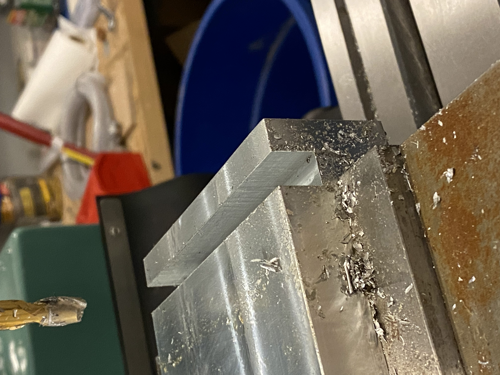
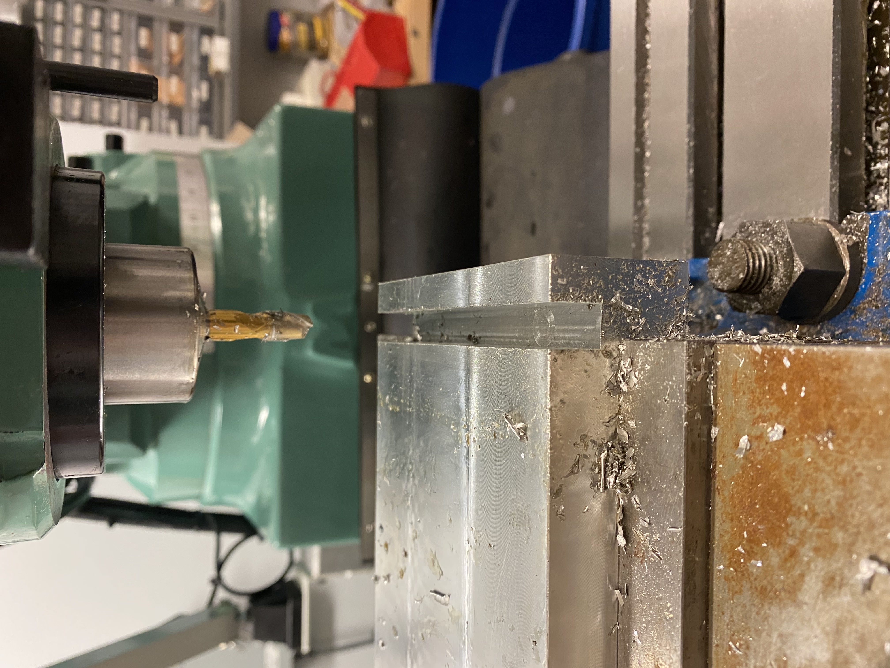
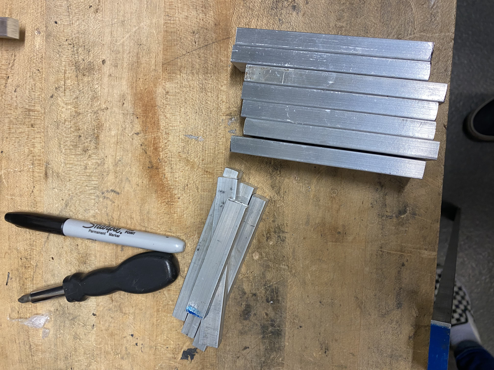
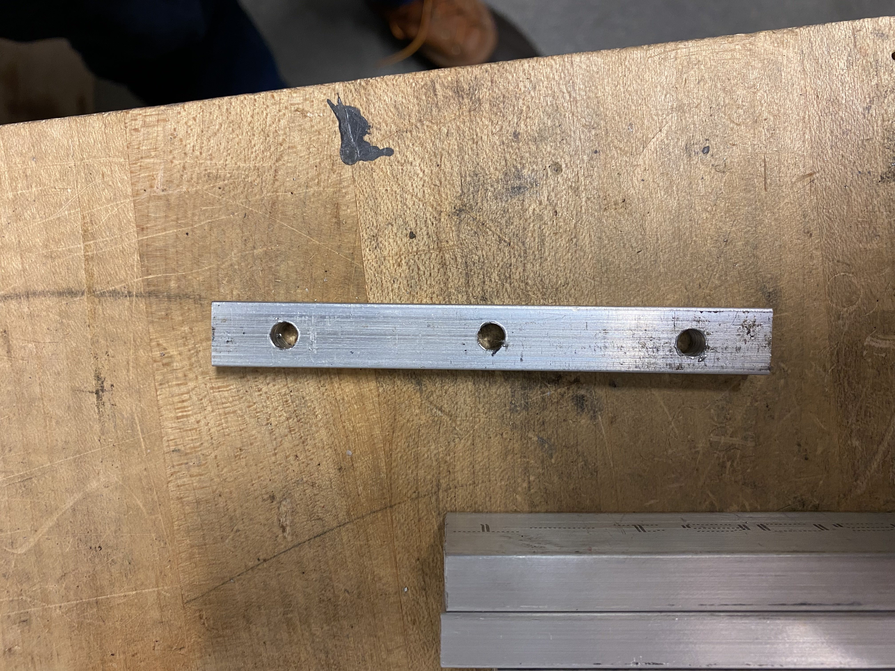

<topbar style="display:none;">
<item><a href="../index.html">Home</a></item>
<item><a href="../about.html">About</a></item>
</topbar>
## Week 8
<br>
#### Design Integration Meeting
Discussion of the collection mechanism.
* Design Integration
* Thinking of how to attach the "dish" to the structure and how to direct the light to the box, thinking like a parascope tube that gets directed to the salt batteries.
* Convenience/interface features; making it more "accessible"
* Haven't dealt with heat modulation or electrical controls
* Thinking about the cooktop as not one large rectangular burner but two circular burners (to prevent lots of heat loss)
* Possible two burners ideally, but the practical outcome could just be one burner (focus on actually building something)
* Collection
* Fabrication would involve making the dish out of lots of curved segments, not fabricating one solid dish
* Solar Tracking
* Photosensor approach to get the maximum amount of sunlight directed into the dish.
* Storage/Heat Transfer
* Still the idea of the adjustable height fins
* Thinking about insulation of the salt batteries
#### Midreview
<br>
* Want things
* Slides with everything that has been considered
* As much prototyping as possible
* As well as mockups/CAD models, but the prototyping influences that
* Maybe some 3D printed models would be useful
* Scale figures (like showing people in the figure or something that gives some sort of scale)
* 2D sketches would be nice, not necessarily trying to create many 3D models
* Effectiveness of the communication
* Draft slide show for individual teams
* Conform to a list of deliverables that will be made available
[A more comprehensive list of deliverables:](https://mit.enterprise.slack.com/files/T0B22F83H/F02KG2F9DHA)
(Genuine checklist is available for next week's page)
* side elevation w/scale figure cooking
* front elevation w/scale figure (if this shows usefully different information from the side view)
* plan (top) view
* series of drawings/sketches showing sequence of use:
* lid to open
* insulation to remove
* how to control heat
* other steps?
* series of drawings/sketches illustrating solar tracking:
* overall drawing of the solar cooker, showing the collection mirror/lens at limit positions and some intermediate positions, with scale figures - the intention is to understand if/how movement of the collector impacts the user experience
* rendering/3D view of overall design(s) - ideally multiple options
* scale models (3d printed with scale figures), and/or full-size models (cardboard)
* section drawing of the collector with light path diagram and notations on expected energy concentration
* diagrams/models/drawings of the solar tracking mechanism/components
* indicate necessary degrees of freedom, and relate them to sun position
* indicate sensors needed and/or other data inputs
* schematic or notations about motors and control system
* 3d printed models demonstrating mechanism
* research regarding materials (coatings to optimize collection efficiency, etc.)
* documentation of previous solar collector prototypes
* current solar collector prototypes
* concept sketches and drawings showing the salt tank/solar energy interface
* does the light just strike the salt enclosure? Is there insulation around it? Is there insulation to cover the collection location when collection is offline?
* are there other concepts for transferring energy into the salt, ie. some system inspired by hot water solar collectors that uses tubes or other heat transfer media? show drawings/sketches etc. for any alternate concepts
* diagrams and 3d models showing different cooking heat control schemes (sliding bars to change rate of conduction, thermal transfer via fluid)
* prototype of conduction system, ideally with photos of a hotplate test and some preliminary data
* information on the salt batteries we have
* estimated drawing
* documentation of plug, vent, etc.
* estimated amount of salt w/calculations of energy potential storage
* sketches/drawings of ideal salt battery size/shape/configuration
#### In the Shop
The mill was continued to be use to create a groove in the solid block of aluminum.


And smaller pieces were cut with the bandsaw. I was not the one who drilled these holes but I did learn how to use
the bandsaw and did cut the smaller pieces.

